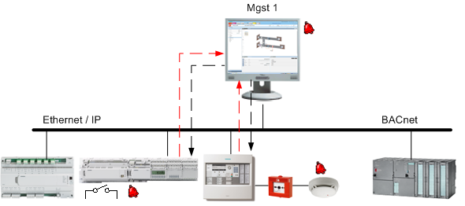
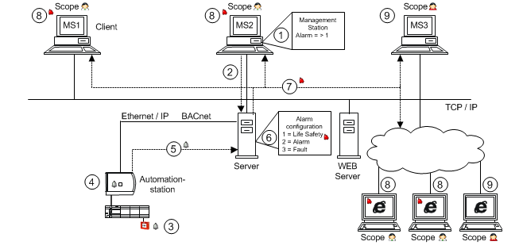
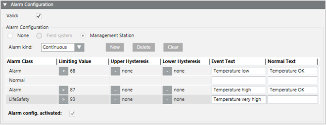
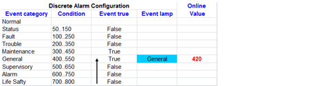
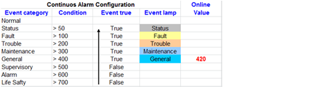
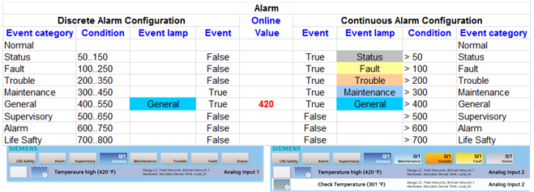

Management Station Alarms
These alarms are set up and configured on the Desigo CC management platform A set up alarm can only forward an event when the Desigo CC management station is operational. As a result, reliability depends on the availability of Desigo CC.

For an alarm to be recognized it must be permanently subscribed to. A change of value on the automation station triggers a COV notification and sends it to the management platform. An alarm event is triggered and forwarded to other recipients when a deviation from a set threshold is recognized.

Permanent subscription to data points may impair your communications system. Limit configuration on the management platform to targeted alarms to avoid impacting the availability of your system.
Alarm Response for Management Station Alarms
The topology displays how an alarm defined on the management station responds in the system.

Workflow and Alarm Response | |
| Description |
_ | Network |
… | Alarm direction |
1 | The user creates an alarm configuration on an object instance (for example room temperature). |
2 | The edited alarm configuration is saved on the server. |
3 | The field device triggers a change of value and creates an alarm. |
4 | The edited value is evaluated on the automation station. |
5 | The new value is sent to the server. |
6 | The server monitors the value and converts it to an alarm based on the alarm configuration. |
7 | Alarm information is transmitted via TCP/IP to the management stations. |
8 | The corresponding alarm information in the appropriate priority class displays in the corresponding event lamp. |
9 | A user not corresponding to the appropriate alarm information in Scopes cannot display the alarms. |
Types of Management Station Alarms
Desigo CC supports two different types of management station alarms:
- Discrete alarm, for example, an alarm range of 68 through 86 or a listing, such as 70, 80, 90.
- Continuous alarm, for example, alarm range <=68 or >=87.


Display of Management Station Alarms in the Summary Bar
- Discrete alarm
Only one alarm state is displayed as active in a discrete alarm configuration. Processing for a discrete alarm occurs based on the alarm configuration from bottom to top. The first event category to meet this condition is displayed (no additional checks for other correct conditions).

- Continuous alarm
Multiple alarm states can be displayed as active for continuous alarm configuration. Processing is always through the entire alarm configuration for a continuous alarm. When multiple conditions are valid for the same event category, they are also displayed in the event lamp counter.

Discrete Alarm versus Continuous Alarm

Types of Alarm Handling
For each alarm class, there are four different ways of reacting to an alarm.
Alarm Handling | ||
Alarm Type | Alarm Behavior | User Action |
Alarm | Acknowledge and reset the alarm |
|
Alarm_Dynamic | Acknowledge and reset the alarm executing commands defined on the alarm source. | |
Alarm_NoAckNoReset | No user action necessary |
|
Alarm_NoReset | Acknowledge the alarm. |
|


Alarm Class to Category Assignment in Default Profile
The alarm class determines in which alarm category an alarm is displayed in the Summary bar.
Assigning an Alarm Class to an Alarm Category for the Default Profile | ||||
Alarm Class | Category |
| Alarm Class | Category |
AccessDenied | Status |
| Information | Status |
AccessGranted | Status |
| LifeSafety | Life Safety |
Activation | Status |
| LifeSafetyManual | Life Safety |
Alarm | Medium |
| LowPriorityAlarm | Low |
Anomaly | Status |
| Maintenance | Low |
ArmDisarm | Trouble |
| MedicalAlarm | Supervisory |
Blocked | Trouble |
| MediumPriorityAlarm | Medium |
BufferFull | Status |
| MotionDetection | Security |
BufferReay | Status |
| NonDefaultMode | Trouble |
Burglary | Security |
| NotReady | Status |
CodeViolation | Supervisory |
| PropertySafety | Security |
CommandFailure | Fault |
| RecipientsNotReached | Low |
ConfigurationError | Status |
| RecordingActive | Status |
Disabled | Trouble |
| Sabotage | Security |
Door | Supervisory |
| SafetyPositionFault | Supervisory |
Duress | Supervisory |
| SeismicAlarm | Supervisory |
Emergency | Emergency |
| Status | Status |
EscalationStarted | Life Safety |
| StreamingFault | Status |
Evacuation | Life Safety |
| Supervisory | Supervisory |
Exclusion | Trouble |
| Tamper | Security |
Fault | Fault |
| TechnicalMessage | Status |
GasAlarm | Life Safety |
| TestAlarm | Status |
General | Status |
| TestMode | Status |
GroundFault | Trouble |
| Trouble | Trouble |
GuardTour | Security |
| UrgentPriorityAlarm | Life Safety |
HighPriorityAlarm | High |
| VideoSensorAlarm | Life Safety |
Holdup | Life Safety |
| WaitPosition | Status |
ImminentDanger | Life Safety |
| WaterFlooding | Life Safety |
InCommand | Status |
| Normal |
|
Only assign the alarm classes that are available in the respective event schema. If an event schema does not support an alarm class, no alarm is transmitted to and displayed in its Alarm Summary bar.